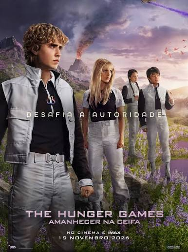
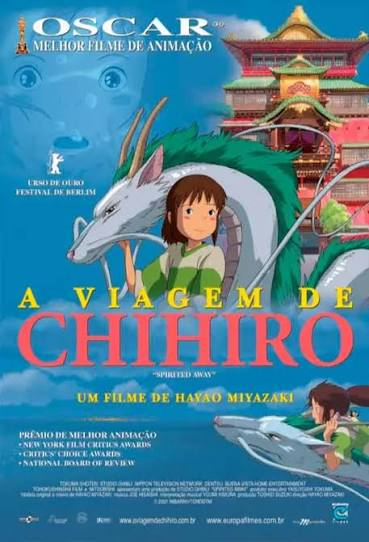
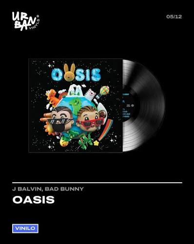
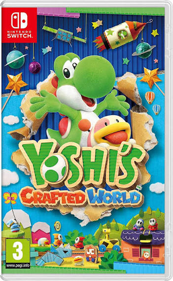

Filmes e Séries

Fonte: Lionsgate / Divulgação
A franquia Jogos Vorazes retorna aos cinemas com "Amanhecer na Colheita", explorando os bastidores políticos de Panem em uma nova trama distópica.

Fonte: Studio Ghibli / Divulgação
Clássico vencedor do Oscar, "A Viagem de Chihiro" segue como referência na animação mundial ao unir fantasia, folclore japonês e uma narrativa sensível.
Música e Podcasts

Fonte: Universal Music / Divulgação
O álbum colaborativo "OASIS", de J Balvin e Bad Bunny, consolidou a força da música urbana latina nas plataformas de streaming com batidas inovadoras.

Fonte: Reprodução / Divulgação
A cantora porto-riquenha Young Miko destaca a nova geração do trap latino, ganhando espaço em videocasts e entrevistas sobre sua trajetória na música.
Games e Tecnologia

Fonte: Nintendo / Divulgação
Em "Yoshi's Crafted World", a direção de arte aposta em cenários feitos de papelão e materiais artesanais, provando que criatividade supera o fotorrealismo.

Fonte: Ubisoft / Divulgação
Ambientado no Japão feudal, "Assassin's Creed Shadows" combina ação furtiva e combates intensos com gráficos de última geração e mundo aberto dinâmico.